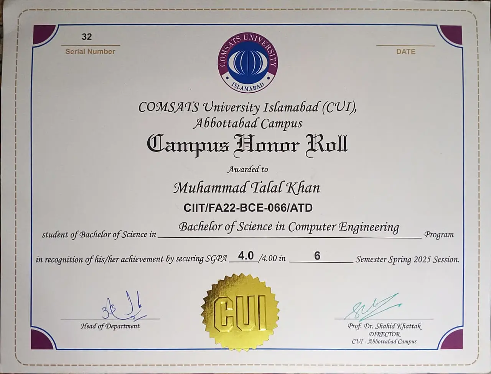
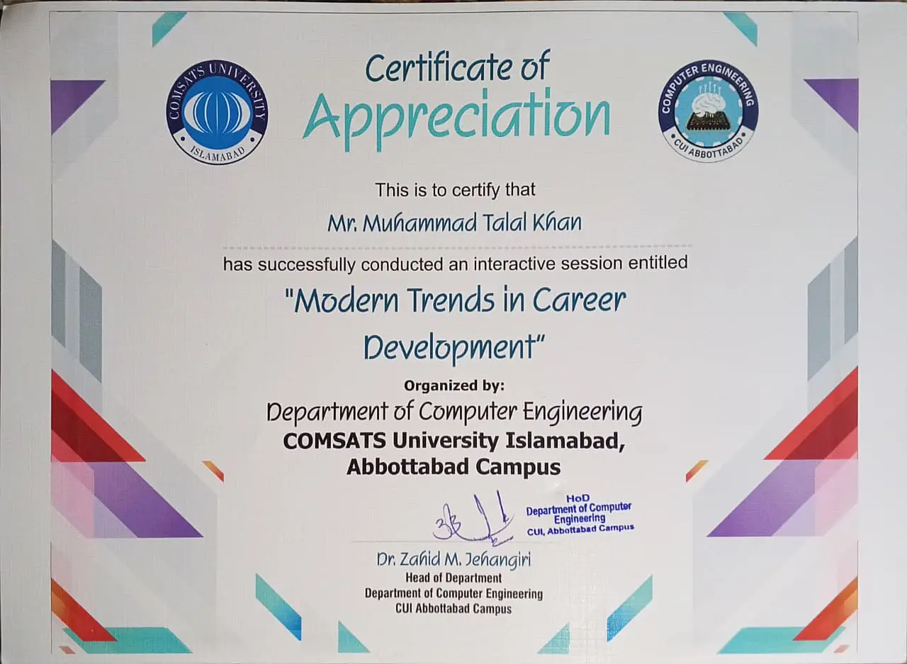
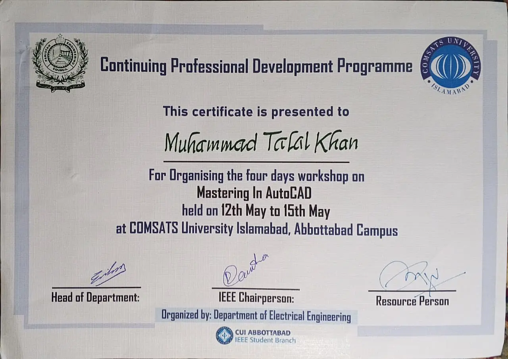
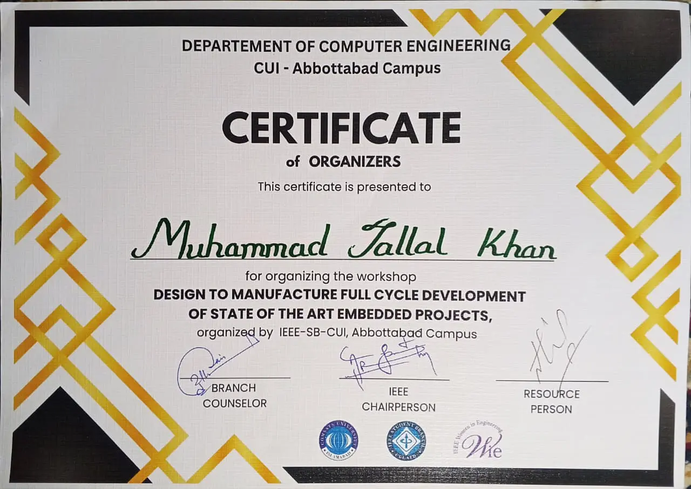
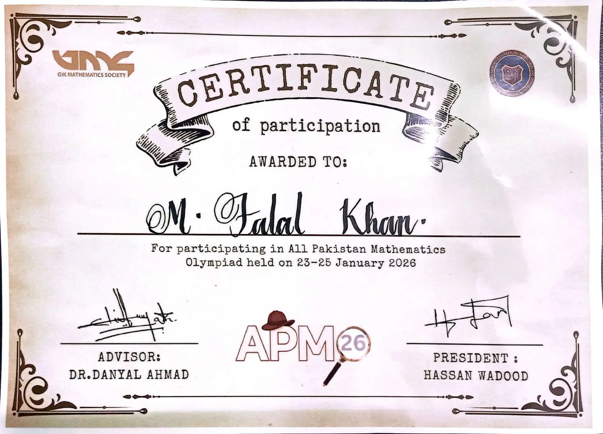
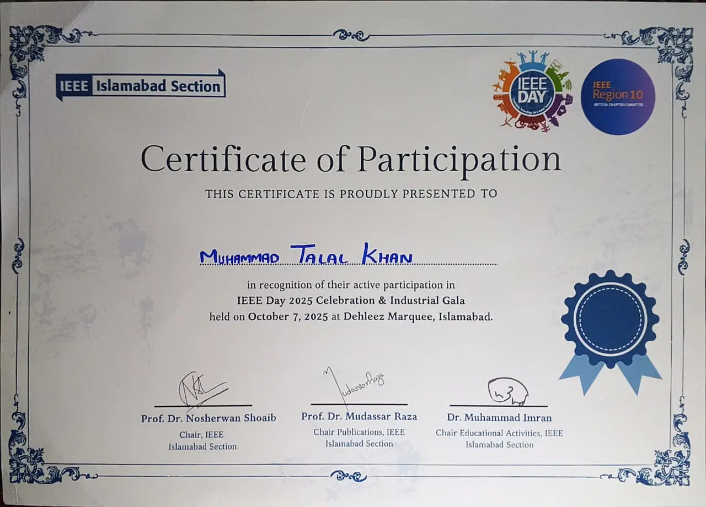
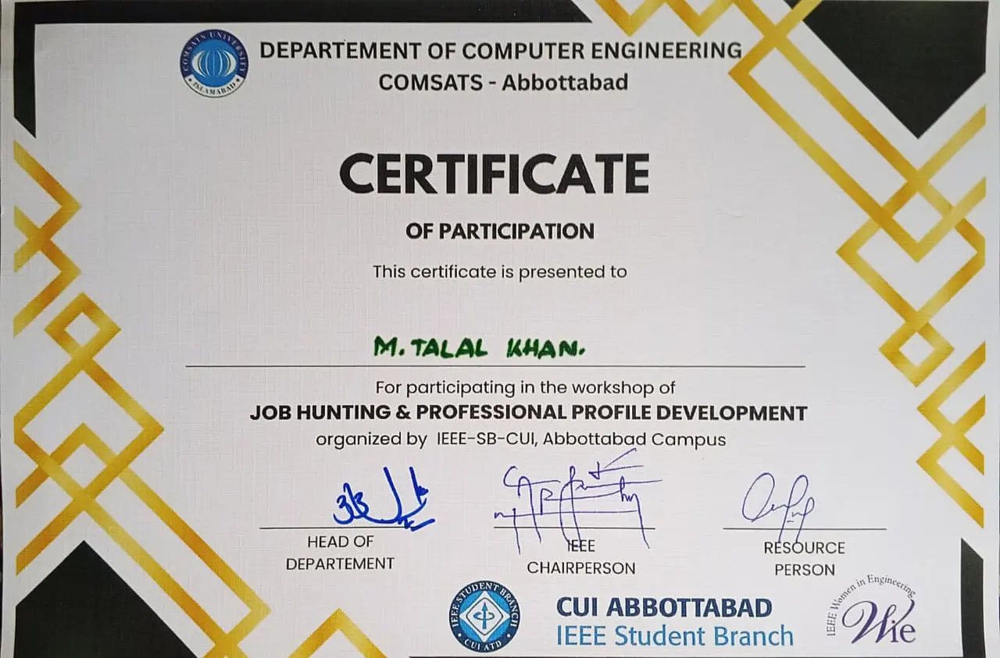

Campus Honor Roll
CUI, Abbottabad Campus
Awarded twice for maintaining exceptional academic standing and appearing on the Director's Honor List.

Departmental Recognition
CUI, Abbottabad Campus
Awarded for organizing the campus workshop "Modern Trends in Career Development" in collaboration with the Department of Computer Engineering.

CPD Program Organizer
CUI, Abbottabad Campus
Recognized for the successful organization of the three-day workshop "Mastering in AutoCAD" under the Continuing Professional Development (CPD) Program.

IEEE SB Event Organizer
IEEE Student Branch CUI
Organized the "Design To Manufacture Full Cycle Development Of State Of The Art Embedded Project" event to bridge the gap between academic learning and professional industry standards.

National Mathematics Olympiad
GIKI University
Participant in the All Pakistan Mathematics Olympiad 2026, competing among the nation’s top analytical minds in high-level problem solving.

IEEE Day Celebration
IEEE Student Branch
Commemorated the 2025 global IEEE Day, engaging in technical workshops and networking sessions to celebrate the spirit of engineering innovation.

Job Hunting And Professional Profile Development
IEEE Student Branch
Participated In An Intensive Career Strategy Workshop Focused On Optimizing Professional Profiles And Navigating Modern Engineering Recruitment Pipelines.